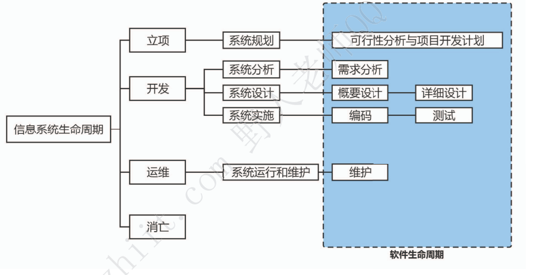

# 信息与信息化
信息是一种普遍联系的形式
# 信息（掌握）
# 定义
信息是用来消除随机不定性的东西（香农）
单位：比特（bit）
# 特征与质量
特征
- 客观性
- 普遍性
- 无限性
- 动态性
- 相对性
- 依附性
- 变换性
- 传体系
- 层次性
- 系统性
- 转换性
质量
- 精确性
- 完整性
- 可靠性
- 技术性
- 经济学
- 可验证性
- 安全性
应对不同场合，信息的侧重面也不一样。
# 信息系统
# 信息系统
定义：
输入数据，进行加工，产生信息的系统
显著特点：
面向管理和支持生产
组成部分：
硬件、软件、数据库、网络、存储设备、感知设备、外设、人员以及把数据处理成信息的规程
分类（用途类型划分）：
电子商务系统、事务处理系统、管理信息系统、生产制造系统、电子政务系统、决策支持系统
# 信息系统的生命周期

四大：立项、开发、运维、消亡
- 立项（系统规划）：写可行性报告
- 开发：
- 系统分析：提出逻辑模型
- 系统设计：提出物理模型
- 系统实施：将设计付诸实施
- 系统运行和维护：维护和评价，记录系统运行情况
- 消亡
5 小：系统规划、系统分析、系统设计、系统实施、运行维护
# 信息化
# 信息化的内涵（掌握）
- 信息网络体系
- 信息产业基础
- 社会运行环境
- 效用积累过程
# 信息化的六要素（掌握）
- 信息技术应用
- 信息资源
- 信息网络
- 信息技术和产业
- 信息化人才
- 信息化政策法规和标准规范
# 现代化基础设施
# 新型基础设施建设（掌握）
简称新基建，
涉及七大领域
- 5G 基建
- 特高压
- 城际高速铁路和城际轨道交通
- 新能源汽车充电桩
- 大数据中心
- 人工智能
- 工业物联网
包含三方面
- 信息基础设施：凸显 “技术新”
- 融合基础设施：重在 “应用新”
- 创新基础设施：强调 “平台新”
# 工业互联网（掌握）
是第四次工业革命的重要基石
# 工业互联网的四大层级
- 网络是基础：工业互联网网络体系有三部分
- 网络互联
- 数据互通
- 标识解析
- 平台是中枢：平台体系包括边缘层、IaaS、PaaS、SaaS，作用如下
- 数据汇聚
- 建模分析
- 知识复用
- 应用创新
- 数据是要素：工业互联网有三个特性
- 重要性
- 专业性
- 复杂性
- 安全是保障：工业互联网安全又三大特点
- 涉及范围广
- 造成影响大
- 企业防护基础弱
# 工业互联网六大典型应用模式
- 平台设计
- 智能化制造
- 网络化协同
- 个性化定制
- 服务化延申
- 数字化管理
# 车联网（掌握）
新一代汽车
# 车联网的三层体系
- 端系统
- 管系统
- 云系统
# 车联网的五种链接方式
- 车与云平台
- 车与车间
- 车与路间
- 车与人间
- 车与设备间
# 车联网的场景应用
- 实用类场景应用：自动碰撞通知、被盗车辆跟踪、道路救援
- 便携类场景应用：信息娱乐服务
- 效率类场景应用：车联网自己更新系统，不用去车厂
# 现代化创新发展（掌握）
# 农业农村现代化（掌握）
农业信息化是农业现代化的重要技术手段。
# 乡村振兴战略（掌握）
-
建设基础设施
-
发展智慧农业
-
建设数字乡村
# 两化融合与智能制造
两化融合：核心是信息化支撑，追求可持续发展模式
- 技术融合
- 产品融合
- 业务融合
- 产业衍生
智能制造：基于新一代信息通信技术与先进制造技术融合的新型生产方式。
GB/T39116《智能制造能力成熟度模型》
- 一级（规划级）：流程化管理
- 二级（规范级）：单一数据共享
- 三级（继承级）：跨业务数据共享
- 四级（优化级）：精准预测和优化核心业务
- 五级（引领级）：产业链协同并衍生新的商业模式
# 消费互联网
本质是个人虚拟化，增强个人生活消费体验。
基本属性：
- 媒体属性
- 产业属性
# 数字中国（掌握）
# 数字经济（掌握）
继农业经济、工业经济之后的更高级经济形态。
构成：
- 数字产业化
- 产业数字化
# 数字化治理
特征：“信息技术 + 治理 "
# 数字价值化
三化框架：
- 数据资源化
- 数据资产化
- 数据资本化
# 数字政府
互联网 + 政府
特征：
- 协同化
- 云端化
- 智能化
- 数据化
- 动态化
- 共享
- 互通
- 便利
主要内容：
- 一网通办
- 跨省通办
- 一网统管
- 一网
- 一屏
- 联动
- 预警
- 创新
# 数字社会
# 数字民生
强调：
- 普惠
- 赋能
- 利民
# 智慧城市
- 智慧城市建设更加注重以人民为中心
- 新技术持续赋能智慧城市的建设与发展
- 城市治理现代化是智慧城市建设的必然要求
- 共建、共治、共享生态模式助理智慧城市高质量发展
核心能力：
- 数据治理
- 数字孪生
- 边际决策
- 多元融合
- 态势感知
成熟度等级
- 一级（规划级）
- 二级（管理级）
- 三级（协同级）
- 四级（优化级）
- 五级（引领级）
# 数字乡村
城乡数字鸿沟大幅度缩小，农民数字化素养显著提升。农业农村现代化基本实现。
# 数字生活
是依托互联网和一系列数字科技技术应用为基础的一种生活方式
- 生活工具数字化
- 生活方式数字化
- 生活内容数字化
# 数字生态
- 数据要素市场
- 数字营商环境
- 网络安全保护
# 数字化转型与元宇宙
# 数字化转型
# 驱动因素
-
生产力飞升：第四次科技革命
-
生产要素变化：数据要素的诞生
-
信息传播效率突破：社会互联网新格局
-
社会 “智慧主体” 规模：快速复制与 “智能 +”
# 困难
- 决策瓶颈
- 变革制约
- 知识资产流失
- 需求响应延迟
# 元宇宙
特征：
- 沉浸式体验
- 虚拟身份
- 虚拟经济
- 虚拟社会治理